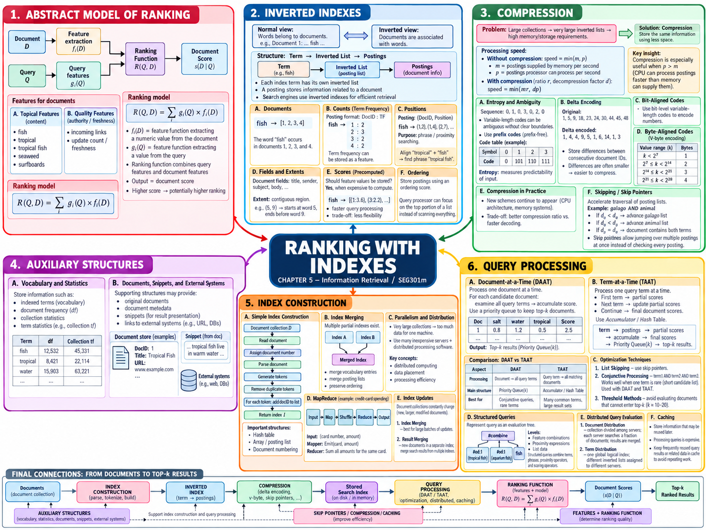

Tài liệu gốc: Slide bài giảng SEG301m Chương 5, "Ranking with Indexes" (43 slide)
Cách đọc: Chương này theo dõi một chu trình khép kín: tìm kiếm ứng viên mà không cần đọc lại tài liệu, sử dụng thống kê tối thiểu để tính điểm số, và xếp hạng trả về kết quả hàng đầu. Đề mục của slide gốc có sự nhảy cóc từ 5.4 sang 5.6; tài liệu này bám sát slide Mục lục (Contents) để chuẩn hóa: Mục 5.5 là Xây dựng chỉ mục, Mục 5.6 là Xử lý truy vấn.
Mục tiêu của chương
Sau khi học xong chương này, bạn có thể giải thích và thực hiện các nội dung sau:
- Trình bày mối quan hệ giữa đầu vào, đặc trưng, điểm số và đầu ra của mô hình xếp hạng.
- Từ văn bản thô, xây dựng chỉ mục đảo kèm tần số từ và thông tin vị trí; thực hiện truy vấn AND, OR và tìm kiếm cụm từ chính xác.
- Chuyển đổi dãy mã tài liệu thành dãy khoảng cách (d-gap), mã hóa và giải mã bằng mã tiền tố (prefix code), mã đơn phân (unary code) và mã byte biến thiên (variable-byte code).
- Giải thích quy trình xây dựng, hợp nhất (merge), phân tán và cập nhật chỉ mục quy mô lớn.
- Tính toán điểm số đồng nhất giữa hai phương pháp duyệt theo từ (TAAT) và duyệt theo tài liệu (DAAT); giải thích cơ chế tìm kiếm top-k và cắt tỉa an toàn (safe pruning).
SLIDE NGUỒN 1-3

Kiến thức cần chuẩn bị
- Tài liệu (Document): Trang web hoặc tệp tin là đối tượng tìm kiếm.
- Token: Đơn vị chuỗi ký tự thu được sau khi phân tách văn bản.
- Từ chỉ mục (Index term): Từ ngữ được chuẩn hóa đưa vào bảng chỉ mục.
- Tần số từ (Term frequency - tf): Số lần xuất hiện của từ trong một tài liệu cụ thể.
- Tần số tài liệu (Document frequency - df): Số lượng tài liệu có chứa từ đó.
- Xếp hạng (Ranking): Quá trình tính điểm và sắp xếp các tài liệu ứng viên theo thứ tự ưu tiên.
Vị trí trong hệ thống tìm kiếm
Ở Chương 4, chúng ta đã biến đổi văn bản thô thành các token và từ chỉ mục. Chương này hướng dẫn cách lưu trữ và tra cứu cực nhanh các từ chỉ mục đó:
Tài liệu gốc
↓ Tách token và chuẩn hóa
Từ chỉ mục và vị trí trong tài liệu
↓ Đảo chỉ mục
Chỉ mục đảo (Inverted index)
↓ Tính d-gap, nén dữ liệu, phân tán
Danh sách posting được lưu trữ
↓ Xử lý truy vấn (TAAT / DAAT)
Tài liệu ứng viên và điểm số
↓ Chọn lọc top-k
Kết quả xếp hạng cuối cùng
Chương 6 tiếp theo sẽ nghiên cứu cách giao tiếp với người dùng và hiển thị đoạn trích (snippet). Chương 7 sẽ đi sâu vào các mô hình toán học tính điểm truy xuất.
5.1 Mô hình trừu tượng của xếp hạng
SLIDE NGUỒN 4-5
Khâu xếp hạng tiếp nhận truy vấn Q và tài liệu D, tính toán và trả về điểm số tài liệu R(Q, D). Slide biểu diễn mô hình tổng quát kết hợp giữa đặc trưng của tài liệu và trọng số của truy vấn:
f_i(D): đặc trưng thứitrích xuất từ tài liệu (tần số từ, số liên kết trỏ đến, độ mới).g_i(Q): hàm trọng số thể hiện mức độ truy vấn coi trọng đặc trưng thứi.R(Q,D): điểm số phục vụ sắp xếp thứ tự; không nhất thiết là xác suất chuẩn hóa.
Ví dụ minh họa: Truy vấn là tropical fish, trọng số truy vấn là tropical = 2, fish = 1. Tài liệu chứa 1 từ tropical và 2 từ fish. Điểm tần số từ đơn giản là 2×1 + 1×2 = 4. Các mô hình thực tế sẽ kết hợp thêm độ dài tài liệu và chỉ số df, nhưng khung kiến trúc "kết hợp đặc trưng tài liệu với trọng số truy vấn" là không đổi.
Kết quả cuối cùng được sắp xếp theo điểm số giảm dần. Quy tắc hòa điểm (ví dụ xếp theo docID tăng dần) cần được quy định rõ để đảm bảo tính tái lập kết quả.
Xem đáp án gợi ý
Không chắc chắn. Điểm số chỉ là giá trị ước lượng dựa trên các đặc trưng mà mô hình thu thập được. Nếu câu truy vấn của người dùng chưa diễn đạt đúng nhu cầu thực tế, hoặc mô hình bị thiên lệch đặc trưng, tài liệu điểm cao vẫn có thể không hữu ích cho người dùng.
5.2 Chỉ mục đảo (Inverted Index)
SLIDE NGUỒN 6-14
Phân biệt các thuật ngữ cốt lõi
| Thuật ngữ | Ý nghĩa | Ví dụ trong chương |
|---|---|---|
| document | Đơn vị tài liệu cần tìm kiếm | D1 đến D4 |
| document ID | Mã định danh số của tài liệu | 1, 2, 3, 4 |
| dictionary / vocabulary | Tập hợp các từ chỉ mục phân biệt | fish, tropical |
| posting | Bản ghi về sự xuất hiện của từ trong 1 tài liệu | (D4, tf=2, pos=[2,5]) |
| posting list | Danh sách các posting của cùng một từ | fish → D1, D2, D3, D4 |
| tf | Số lần từ xuất hiện trong tài liệu | tf(fish, D4) = 2 |
| df | Số lượng tài liệu có chứa từ | df(fish) = 4 |
| position | Vị trí offset của token trong bài | fish trong D4 nằm ở vị trí 2 và 5 |
Xây dựng posting list từ tài liệu
Ví dụ minh họa: Xét bộ sưu tập gồm 4 tài liệu tiếng Anh, đánh số vị trí từ 1, giữ nguyên từ dừng để theo dõi vị trí:
| ID | Văn bản gốc | Chuỗi token |
|---|---|---|
| D1 | tropical fish swim |
1:tropical 2:fish 3:swim |
| D2 | fish live in tropical water |
1:fish 2:live 3:in 4:tropical 5:water |
| D3 | tropical aquarium fish |
1:tropical 2:aquarium 3:fish |
| D4 | freshwater fish and tropical fish |
1:freshwater 2:fish 3:and 4:tropical 5:fish |
Bước 1: Trích xuất các bộ ba (term, docID, position):
(tropical,D1,1) (fish,D1,2) (swim,D1,3)
(fish,D2,1) (live,D2,2) (in,D2,3) (tropical,D2,4) (water,D2,5)
(tropical,D3,1) (aquarium,D3,2) (fish,D3,3)
(freshwater,D4,1) (fish,D4,2) (and,D4,3) (tropical,D4,4) (fish,D4,5)
Bước 2: Gom nhóm theo từ, sắp xếp theo docID và ghi nhận vị trí:
| Từ | df | Danh sách bản ghi vị trí (positional postings) |
|---|---|---|
aquarium |
1 | D3: tf=1, [2] |
fish |
4 | D1:1,[2] · D2:1,[1] · D3:1,[3] · D4:2,[2,5] |
tropical |
4 | D1:1,[1] · D2:1,[4] · D3:1,[1] · D4:1,[4] |
Đây là cấu trúc "từ trỏ tới tài liệu", giúp hệ thống chỉ cần đọc danh sách posting của các từ có trong truy vấn mà không phải duyệt qua toàn bộ các tài liệu không liên quan.
Tìm kiếm Boolean: AND, OR và Tìm kiếm cụm từ
tropical AND fish: Giao của hai posting list →{D1, D2, D3, D4}.aquarium OR freshwater: Hợp của hai posting list →{D3, D4}.tropical AND NOT aquarium: Lấy tậptropicaltrừ đi tậpaquarium→{D1, D2, D4}.
Đối với tìm kiếm cụm từ chính xác "tropical fish", chỉ có cùng tài liệu là chưa đủ mà vị trí của fish phải đứng ngay sau tropical (pos(fish) = pos(tropical) + 1):
| Tài liệu | Vị trí tropical |
Vị trí fish |
Có tạo thành cụm từ liền nhau? |
|---|---|---|---|
| D1 | [1] |
[2] |
Đúng, 1 + 1 = 2 |
| D2 | [4] |
[1] |
Sai, fish đứng trước tropical |
| D3 | [1] |
[3] |
Sai, bị xen giữa bởi từ aquarium (vị trí 2) |
| D4 | [4] |
[2, 5] |
Đúng, 4 + 1 = 5 |
Kết quả của cụm từ "tropical fish" là {D1, D4}. Nếu chỉ mục không lưu thông tin vị trí (positional index) thì không thể thực hiện chính xác phép kiểm tra cụm từ này.
Trường dữ liệu, Extent và Điểm số tính sẵn
- Trường (Field): Vùng dữ liệu có ngữ nghĩa như tiêu đề (title), thân bài (body), người gửi.
- Extent: Khoảng vị trí liên tục được biểu diễn dưới dạng nửa mở
[start, end). Ví dụ[5, 9)chứa các vị trí 5, 6, 7, 8.
Lưu trữ sẵn tf, vị trí, trường và các đặc trưng tính trước vào posting giúp giảm tải tính toán khi có truy vấn. Tuy nhiên, việc lưu quá nhiều thông tin phụ sẽ làm phình to kích thước chỉ mục và giảm tính linh hoạt nếu sau này muốn thay đổi công thức xếp hạng.
Ngoài thứ tự sắp xếp theo docID, hệ thống có thể duy trì thêm danh sách phụ sắp xếp theo trọng số giảm dần để phục vụ lấy nhanh top kết quả, nhưng thứ tự theo docID vẫn là bắt buộc đối với các phép toán Boolean AND và thuật toán DAAT.
Xem đáp án gợi ý
Vì vị trí của hai từ trong D3 lần lượt là tropical = 1 và fish = 3. Ở giữa hai từ này bị chèn từ aquarium (vị trí 2), không thỏa mãn điều kiện vị trí đứng liền kề nhau (pos(fish) = pos(tropical) + 1).
5.3 Nén chỉ mục (Compression)
SLIDE NGUỒN 15-23
Vì sao nén dữ liệu giúp tăng tốc độ xử lý
Nén chỉ mục không chỉ để tiết kiệm dung lượng ổ đĩa. Giả sử bộ vi xử lý có thể xử lý p bản ghi mỗi giây, nhưng băng thông bộ nhớ chỉ cung cấp được m bản ghi mỗi giây. Khi đó thông lượng thực tế bị giới hạn bởi nút cổ chai min(m, p):
- Nếu
p > m, CPU phải ngồi chờ nạp dữ liệu từ bộ nhớ. Bằng cách nén dữ liệu theo tỷ lệr, lượng dữ liệu nạp qua cùng một băng thông tăng lên thànhm × r. Dù tốn thêm chút thời gian giải nén (hạ tốc độ CPU xuống cònd × p), thông lượng mớimin(m × r, d × p)vẫn cao hơn đáng kể so với trước khi nén. - Nếu
p < m, nút cổ chai nằm ở tốc độ tính toán của CPU, khi đó thuật toán giải nén quá nặng nề có thể phản tác dụng.
Biến đổi d-gap tách biệt với khâu mã hóa bit
Khi danh sách docID được sắp xếp tăng dần, thay vì lưu các số nguyên docID rất lớn, hệ thống lưu hiệu số chênh lệch giữa hai docID liên tiếp (d-gap):
Dãy docID gốc: 1, 5, 9, 18, 23, 24, 30, 44, 45, 48
Dãy d-gap: 1, 4, 4, 9, 5, 1, 6, 14, 1, 3
Khi đọc dữ liệu, hệ thống chỉ cần tính mảng cộng dồn: 1, 1+4=5, 5+4=9, 9+9=18. Biến đổi d-gap là bước toán học thu nhỏ độ lớn của các số nguyên; bước mã hóa tiếp theo mới chuyển các số nguyên nhỏ này thành chuỗi bit tối ưu.
Mã tiền tố (Prefix Code)
Slide 17 minh họa nếu ghép tùy tiện các mã có độ dài khác nhau mà không có dấu phân tách thì bên giải mã sẽ không biết từ mã kết thúc ở đâu. Mã tiền tố (prefix code) bảo đảm không có từ mã nào là tiền tố của một từ mã khác, cho phép giải mã tức thì từ trái sang phải mà không cần ký tự phân cách:
| Giá trị | Từ mã (code) |
|---|---|
| 0 | 0 |
| 1 | 101 |
| 2 | 110 |
| 3 | 111 |
Chuỗi giá trị 0, 1, 0, 3, 0, 2, 0 được mã hóa thành 0 101 0 111 0 110 0 (tổng cộng 13 bit) và được phân tách duy nhất khi giải mã.
Mã đơn phân (Unary Code)
Mã đơn phân biểu diễn số nguyên k bằng k số 1 liên tiếp kết thúc bằng một số 0:
| Giá trị k | Từ mã unary | Số lượng bit |
|---|---|---|
| 0 | 0 |
1 |
| 1 | 10 |
2 |
| 2 | 110 |
3 |
| 5 | 111110 |
6 |
Mã đơn phân cực kỳ gọn cho các số rất nhỏ (gap = 1 chỉ tốn 2 bit), nhưng với số lớn thì độ dài k + 1 bit trở nên quá cồng kềnh. Mã đơn phân là mã canh hàng theo bit (bit-aligned), nghĩa là điểm bắt đầu của một từ mã không cần phải nằm đúng ở đầu của một byte.
Ví dụ minh họa: Mã hóa dãy gap 2, 1, 3 thành chuỗi bit 110 | 10 | 1110 → 110101110 (tổng cộng 9 bit). Từ mã thứ hai bắt đầu ở bit thứ 4 của byte đầu, từ mã thứ ba vắt ngang qua ranh giới giữa byte 1 và byte 2.
Mã byte biến thiên (Variable-byte Code)
Slide 21 chia mỗi byte thành 1 bit báo hiệu kết thúc và 7 bit dữ liệu tải (payload). Quy ước trong slide: bit cao nhất của byte cuối cùng nhận giá trị 1, các byte phía trước nhận giá trị 0:
| Giá trị | Nhóm 7-bit | Chuỗi byte nhị phân | Mã Hex |
|---|---|---|---|
| 1 | 1 |
10000001 |
81 |
| 127 | 1111111 |
11111111 |
FF |
| 128 | 1, 0 |
00000001 10000000 |
01 80 |
| 130 | 1, 2 |
00000001 10000010 |
01 82 |
| 20.000 | 1, 28, 32 |
00000001 00011100 10100000 |
01 1C A0 |
Giải mã chuỗi 01 1C A0: payload gồm 3 nhóm 1, 28, 32:
((1 × 128) + 28) × 128 + 32 = 20.000.
Mã byte biến thiên thao tác trên các byte tròn trĩnh nên tốc độ giải mã của CPU rất nhanh, dù có tốn thêm một chút overhead so với các phương pháp nén tinh vi cấp độ bit.
Con trỏ nhảy (Skip Pointer)
Trong danh sách posting dài, hệ thống đặt các con trỏ nhảy (skip pointer) để bỏ qua các đoạn không cần thiết khi thực hiện phép giao AND. Nếu docID hiện tại nhỏ hơn docID của danh sách kia và đích nhảy tới vẫn nhỏ hơn hoặc bằng docID mục tiêu, con trỏ có thể nhảy vọt một đoạn an toàn mà không sợ bỏ sót kết quả.
Xem đáp án gợi ý
Dãy gap là 3, 7, 1, 19 (với 10 - 3 = 7, 11 - 10 = 1, 30 - 11 = 19). Khôi phục bằng phép cộng dồn: phần tử đầu là 3, tiếp theo 3 + 7 = 10, 10 + 1 = 11, 11 + 19 = 30.
5.4 Các cấu trúc phụ trợ
SLIDE NGUỒN 24
Chỉ mục đảo đơn thuần không thể cung cấp toàn bộ thông tin để hiển thị một trang kết quả tìm kiếm hoàn chỉnh:
| Cấu trúc phụ trợ | Nội dung lưu trữ | Thao tác được tăng tốc |
|---|---|---|
| Từ điển từ vựng (Vocabulary) | Danh sách từ, vị trí con trỏ tới posting list, df | Tìm nhanh vị trí posting list của từ truy vấn |
| Thống kê bộ sưu tập | Tổng số tài liệu, độ dài tài liệu trung bình | Phục vụ tính điểm mô hình BM25, idf |
| Bảng tài liệu (Document table) | docID, URL, tiêu đề, độ dài văn bản | Lấy metadata của tài liệu sau khi có top kết quả |
| Dữ liệu tạo snippet | Văn bản gốc, vị trí câu, vị trí từ | Trích xuất nhanh đoạn văn xung quanh từ khóa |
Từ điển hỗ trợ ánh xạ từ → posting list, còn bảng tài liệu hỗ trợ ánh xạ ngược lại docID → thông tin hiển thị.
Xem đáp án gợi ý
Không đủ. Posting list chỉ cung cấp mã định danh docID và tần số/vị trí từ. Hệ thống phải dùng mã docID đó để tra cứu vào bảng tài liệu (document table) hoặc kho dữ liệu tài liệu thì mới lấy được tiêu đề và đường dẫn URL hiển thị.
5.5 Xây dựng, hợp nhất, phân tán và cập nhật chỉ mục
SLIDE NGUỒN 25-31
Quy trình xây dựng cơ bản
Slide 25 mô tả thuật toán lập chỉ mục cơ bản: gán số định danh cho tài liệu, phân tích từ ngữ và gom nhóm theo từ:
Đọc văn bản tài liệu
→ Gán mã định danh docID
→ Tách chuỗi thành các token
→ Tạo các bản ghi bộ ba (term, docID, position)
→ Sắp xếp theo thứ tự từ, sau đó theo docID
→ Gom các bản ghi có cùng từ lại với nhau
→ Ghi ra đĩa danh sách posting list hoàn chỉnh
Hợp nhất từng khối khi dữ liệu vượt quá RAM (Block Merge)
Khi số lượng tài liệu quá lớn không thể sắp xếp toàn bộ trong bộ nhớ RAM, hệ thống chia nhỏ thành các khối (block) vừa vặn với RAM, sắp xếp cục bộ rồi ghi tạm ra đĩa, sau đó dùng thuật toán hợp nhất nhiều luồng (k-way merge) để tạo thành chỉ mục hoàn chỉnh.
Ví dụ minh họa: Hợp nhất hai chỉ mục thành phần:
Chỉ mục A: aardvark → [2, 3, 4, 5] apple → [2, 4]
Chỉ mục B: aardvark → [6, 9] actor → [15, 42, 68]
Duyệt theo thứ tự bảng chữ cái: từ aardvark xuất hiện ở cả hai bên sẽ được nối danh sách posting lại với nhau; các từ còn lại giữ đúng thứ tự:
aardvark → [2, 3, 4, 5, 6, 9]
actor → [15, 42, 68]
apple → [2, 4]
Mô hình MapReduce và Phân bổ dữ liệu
Trong hệ thống phân tán, các nút Mapper đọc dữ liệu và phát ra các cặp (key, value). Giai đoạn shuffle gom toàn bộ các giá trị có cùng key về cùng một nút Reducer để tổng hợp. Trong bài toán xây dựng chỉ mục, từ chỉ mục đóng vai trò là key, còn thông tin vị trí tài liệu chính là value.
Phân hoạch theo tài liệu và Phân hoạch theo từ
| Phương thức | Nội dung mỗi máy chủ nắm giữ | Luồng xử lý truy vấn | Cách hợp nhất kết quả |
|---|---|---|---|
| Phân hoạch theo tài liệu (Document partition) | Một tập hợp tài liệu con, lưu đủ mọi từ của tập đó | Máy môi giới gửi cùng một truy vấn tới toàn bộ các shard | Hợp nhất danh sách top-k của các shard theo điểm số |
| Phân hoạch theo từ (Term partition) | Một dải từ vựng nhất định, lưu đủ posting của từ đó trên toàn bộ tài liệu | Chỉ gửi truy vấn tới các máy chủ phụ trách các từ đó | Các máy trao đổi posting hoặc điểm bộ phận để hợp nhất |
Với truy vấn tropical fish, trong mô hình phân hoạch theo tài liệu, máy chủ A, B, C độc lập chấm điểm các tài liệu của mình, sau đó bộ môi giới (broker) gộp các danh sách ứng viên để chọn ra top-k toàn cục. Trong mô hình phân hoạch theo từ, máy chủ quản lý từ tropical và máy chủ quản lý từ fish phải truyền dữ liệu cho nhau qua mạng để tìm các tài liệu chung.
Cập nhật chỉ mục
Có hai chiến lược chính để xử lý tài liệu mới cập nhật:
- Hợp nhất chỉ mục (Index merging): Tạo các chỉ mục phụ kích thước nhỏ cho tài liệu mới, sau đó định kỳ hợp nhất vào chỉ mục chính (base index).
- Hợp nhất kết quả (Result merging): Giữ riêng chỉ mục chính và chỉ mục phụ; khi có truy vấn thì tìm kiếm trên cả hai chỉ mục và gộp kết quả tại thời điểm tìm kiếm.
Xem đáp án gợi ý
Không đủ. Hoàn toàn có thể xảy ra trường hợp cả 10 tài liệu tốt nhất của toàn bộ hệ thống đều tình cờ nằm tập trung trên cùng một shard duy nhất. Vì vậy, theo nguyên tắc an toàn, mỗi shard phải gửi về ít nhất đủ số lượng top-k (10 tài liệu) của riêng mình thì máy môi giới mới có thể chọn ra đúng top-k toàn cục.
5.6 Xử lý truy vấn (Query Processing)
SLIDE NGUỒN 32-41
Áp dụng cùng một công thức tính điểm
Xét 4 tài liệu ở Mục 5.2, trọng số truy vấn: tropical = 2, fish = 1, aquarium = 3. Công thức tính điểm cộng dồn:
| Tài liệu | Điểm từ tropical |
Điểm từ fish |
Điểm từ aquarium |
Tổng điểm |
|---|---|---|---|---|
| D1 | 2 × 1 = 2 |
1 × 1 = 1 |
0 | 3 |
| D2 | 2 × 1 = 2 |
1 × 1 = 1 |
0 | 3 |
| D3 | 2 × 1 = 2 |
1 × 1 = 1 |
3 × 1 = 3 |
6 |
| D4 | 2 × 1 = 2 |
1 × 2 = 2 |
0 | 4 |
Top 2 tài liệu dẫn đầu là D3 (6 điểm) và D4 (4 điểm). Với quy tắc hòa điểm ưu tiên docID nhỏ hơn, thứ tự toàn bộ là D3, D4, D1, D2.
Xử lý theo từng từ (Term-at-a-time - TAAT)
Phương pháp TAAT đọc trọn vẹn từng posting list của từng từ truy vấn và cộng dồn điểm vào mảng tích lũy (accumulator):
| Sau khi duyệt xong từ | Điểm tích lũy D1 | Điểm tích lũy D2 | Điểm tích lũy D3 | Điểm tích lũy D4 |
|---|---|---|---|---|
Duyệt xong tropical |
2 | 2 | 2 | 2 |
Duyệt xong fish |
3 | 3 | 3 | 4 |
Duyệt xong aquarium |
3 | 3 | 6 | 4 |
Ưu điểm của TAAT là đọc tuần tự rất nhanh từng danh sách posting trên đĩa, nhưng nhược điểm là phải tốn bộ nhớ duy trì mảng tích lũy cho hàng triệu tài liệu tiềm năng.
Xử lý theo từng tài liệu (Document-at-a-time - DAAT)
Phương pháp DAAT mở đồng thời tất cả các posting list của các từ truy vấn, duyệt theo thứ tự docID nhỏ nhất và chốt điểm dứt điểm cho từng tài liệu:
| docID đang xét | Điểm từ tropical |
Điểm từ fish |
Điểm từ aquarium |
Điểm hoàn chỉnh | Thao tác con trỏ tiếp theo |
|---|---|---|---|---|---|
| 1 | tf=1 (2đ) | tf=1 (1đ) | không có | 3 | Đẩy con trỏ của docID 1 |
| 2 | tf=1 (2đ) | tf=1 (1đ) | không có | 3 | Đẩy con trỏ của docID 2 |
| 3 | tf=1 (2đ) | tf=1 (1đ) | tf=1 (3đ) | 6 | Đẩy con trỏ của docID 3 |
| 4 | tf=1 (2đ) | tf=2 (2đ) | không có | 4 | Đẩy con trỏ của docID 4 |
Vì cùng áp dụng chung dữ liệu posting và công thức tính điểm nên kết quả cuối cùng của TAAT và DAAT hoàn toàn trùng khớp nhau.
Tìm kiếm top-k, Ngưỡng điểm và Cắt tỉa (Pruning)
Trong bài toán truy xuất top-k, hệ thống duy trì một hàng đợi ưu tiên (priority queue) chứa k tài liệu điểm cao nhất hiện tại. Chỉ sau khi đã thu thập đủ k tài liệu đầu tiên, điểm số của tài liệu đứng thứ k mới được dùng làm ngưỡng điểm (score threshold) để loại trừ các ứng viên phía sau.
Gọi cận trên (upper bound) điểm số tiềm năng của một tài liệu là "điểm tích lũy hiện tại + điểm tối đa mà các từ chưa xử lý có thể đóng góp thêm". Điều kiện cắt tỉa an toàn (safe pruning):
- Nếu
upper bound < threshold: Tài liệu này chắc chắn không thể đạt đủ điểm để lọt vào top-k, do đó có thể loại bỏ an toàn ngay lập tức. - Nếu
upper bound = threshold: Tài liệu vẫn có cơ hội lọt vào top-k nhờ quy tắc giải quyết hòa điểm (ví dụ có docID nhỏ hơn), do đó tuyệt đối không được loại bỏ chỉ dựa vào điểm số.
Phản ví dụ về trường hợp hòa điểm: Xét bài toán tìm k = 1, kết quả tạm thời tốt nhất đang giữ là D9 với điểm số 4. Tài liệu D2 hiện có điểm số 2 và phần còn lại có thể đóng góp tối đa 2, suy ra cận trên của D2 là 2 + 2 = 4. Cuối cùng D2 sẽ đạt điểm 4 bằng với D9, và vì có docID nhỏ hơn (2 < 9) nên D2 phải là người giành vị trí số 1. Nếu áp dụng điều kiện ngây thơ upper bound ≤ 4 để loại D2 thì hệ thống sẽ trả về kết quả sai hoàn toàn.
Cắt tỉa chuẩn xác (exact early termination) bảo đảm không làm rơi rớt bất kỳ tài liệu nào của top-k thực sự; còn cắt tỉa xấp xỉ (approximate early termination) chấp nhận bỏ qua một số ứng viên nghi ngờ để tối đa hóa tốc độ với cái giá là chất lượng có thể suy giảm nhẹ.
Cây thực thi truy vấn có cấu trúc
Slide 39 biểu diễn truy vấn dạng cấu trúc của Galago dưới dạng cây:
#combine
├─ #od:1(tropical fish)
├─ #od:1(aquarium fish)
└─ fish
Các nút lá đọc dữ liệu từ posting list, #od:1 là điều kiện xuất hiện sát nhau theo thứ tự, và nút gốc #combine thực hiện kết hợp điểm số của các nhánh con.
Xem đáp án gợi ý
Cần kiểm tra xem cả hai phương pháp có đang sử dụng cùng một bộ dữ liệu posting, cùng tần số tf, cùng trọng số truy vấn và cùng công thức toán học hay không. Về mặt lý thuyết, TAAT và DAAT chỉ là hai cách tổ chức thứ tự duyệt khác nhau, nếu cùng tính toán đầy đủ trên cùng dữ liệu thì kết quả luôn phải trùng khớp 100%. Ngoài ra, cần kiểm tra sự khác biệt về sai số làm tròn số thực và các điều kiện cắt tỉa sớm.
Bài tập cuối chương
SLIDE NGUỒN 42
Bài tập 1: Bài tập gốc trong slide 42
Cho hai tài liệu sau, xử lý cùng một quy tắc tách token chữ thường:
Document 1: Football is a family of team sports that involve, to varying degrees, kicking a ball to score a goal.
Document 2: A football team is a group of players selected to play together in the various team sports known as football.
- Xây dựng chỉ mục đảo cho các từ.
- Viết hàm tra cứu trả về toàn bộ docID chứa từ
sports. - Nêu rõ quy tắc chuẩn hóa chữ hoa/thường và dấu câu đã áp dụng.
Xem hướng dẫn giải
Chuyển toàn bộ về chữ thường, tách từ theo chuỗi ký tự chữ cái tiếng Anh: từ sports xuất hiện ở cả hai tài liệu (mỗi tài liệu 1 lần). Danh sách posting tương ứng: sports → [(D1, tf=1), (D2, tf=1)]. Khi tra cứu, hệ thống tìm từ sports trong từ điển và trả về danh sách {D1, D2}.
Bài tập 2: Tính d-gap và mã hóa Variable-byte
Danh sách docID của một posting list là 5, 130, 260. Hãy chuyển thành dãy gap và mã hóa từng số bằng mã byte biến thiên theo quy ước của Slide 21.
Xem đáp án gợi ý
Dãy gap tương ứng là 5, 125, 130 (với 130 - 5 = 125, 260 - 130 = 130). Mã hóa: số 5 thành byte 85; số 125 thành byte FD; số 130 (lớn hơn 127) thành 2 byte 01 82. Toàn bộ chuỗi mã hóa tốn đúng 4 byte: 85 FD 01 82.
Bài tập 3: Quyết định kiến trúc trong vận hành thực tế
Xét hệ thống tìm kiếm tin tức với hàng trăm bản tin mới đổ về mỗi giây đồng thời phục vụ lượng truy vấn tìm kiếm khổng lồ. Hãy so sánh phương án "mỗi lần có tin mới thì dựng lại toàn bộ chỉ mục chính" với phương án "tạo chỉ mục phụ nhỏ cho tin mới và gộp kết quả tại thời điểm tìm kiếm".
Xem đáp án gợi ý
Dựng lại toàn bộ chỉ mục cho mỗi bản tin là bất khả thi vì chi phí ghi đĩa và tính toán quá lớn. Phương án dùng chỉ mục phụ trong bộ nhớ (in-memory index) cho phép bài viết mới có thể tìm kiếm được ngay lập tức; khi có truy vấn, hệ thống tìm trên cả chỉ mục chính và chỉ mục phụ rồi hợp nhất kết quả. Khi chỉ mục phụ đạt dung lượng nhất định, hệ thống sẽ chạy tiến trình ngầm để hợp nhất vào chỉ mục chính.
Tổng kết
SLIDE NGUỒN 43
- Khâu xếp hạng kết hợp đặc trưng tài liệu
f_i(D)với trọng số truy vấng_i(Q)để tạo điểm số so sánh. - Chỉ mục đảo cho phép tra cứu nhanh docID, tần số tf, vị trí xuất hiện và các trường dữ liệu từ từ vựng.
- Tìm kiếm cụm từ bắt buộc phải sử dụng chỉ mục vị trí (positional index) để kiểm tra thứ tự và khoảng cách giữa các từ.
- Biến đổi d-gap thu nhỏ giá trị số nguyên; các mã prefix, unary, variable-byte mã hóa các khoảng cách gap thành chuỗi bit/byte tối ưu.
- Chỉ mục quy mô lớn được xây dựng bằng thuật toán sắp xếp từng khối (block merge), xử lý phân tán MapReduce và phân hoạch theo tài liệu hoặc theo từ.
- TAAT và DAAT cho cùng một kết quả điểm số nhưng khác nhau về quản lý bộ nhớ. Cắt tỉa an toàn top-k đòi hỏi phải chứng minh ứng viên không thể vượt qua ngưỡng điểm ngay cả khi có trường hợp hòa điểm.
Câu hỏi tự kiểm tra
- Chỉ số
dfvàtflần lượt đếm đại lượng gì? - Vì sao việc chuyển đổi docID sang dạng d-gap lại giúp nén dữ liệu hiệu quả hơn?
- Bit kết thúc (termination bit) trong mã byte biến thiên của slide đại diện cho điều gì?
- Trong kiến trúc phân hoạch theo tài liệu, kết quả tìm kiếm được hợp nhất ở đâu?
- Sự khác biệt giữa cắt tỉa chính xác (exact early termination) và cắt tỉa xấp xỉ (approximate) là gì?
- Khi tìm
k = 1và kết quả hiện tại làD9(điểm 4), vì sao ứng viênD2có cận trên điểm số bằng 4 lại không được phép cắt tỉa?
Xem đáp án gợi ý
tfđếm số lần xuất hiện của từ trong một tài liệu;dfđếm số lượng tài liệu có chứa từ đó.- Vì các số nguyên docID liên tiếp có khoảng cách chênh lệch (gap) nhỏ hơn rất nhiều so với giá trị tuyệt đối của docID, giúp mã hóa được bằng ít bit hơn.
- Bit cao nhất nhận giá trị
1báo hiệu đây là byte cuối cùng của số nguyên; bit0báo hiệu vẫn còn các byte phía sau. - Được hợp nhất tại máy chủ môi giới truy vấn (query broker) hoặc nút điều phối trung tâm.
- Cắt tỉa chính xác bảo đảm top-k không thay đổi so với tính toán đầy đủ; cắt tỉa xấp xỉ chấp nhận rủi ro bỏ sót tài liệu tốt để tối đa hóa tốc độ.
- Vì nếu đạt cùng điểm 4, quy tắc hòa điểm ưu tiên docID nhỏ hơn sẽ đưa
D2lên xếp trênD9. Chỉ có thể loại bỏ khi cận trên strictly nhỏ hơn ngưỡng điểm (upper bound < threshold).
Chuyển tiếp sang chương sau
Chương này đã hoàn thiện cơ chế tra cứu posting và tính điểm khi đã có câu truy vấn. Tuy nhiên, xâu ký tự người dùng gõ vào ô tìm kiếm không phải lúc nào cũng thể hiện hoàn hảo điều họ muốn. Chương 6 tiếp theo sẽ nghiên cứu cách hiểu nhu cầu thông tin, sửa lỗi chính tả, mở rộng truy vấn và trình bày kết quả dễ đọc.
Bảng thuật ngữ
| English | Tiếng Việt | Ý nghĩa trong chương này |
|---|---|---|
| Inverted index | Chỉ mục đảo | Cấu trúc dữ liệu tra cứu danh sách tài liệu từ từ ngữ |
| Posting / posting list | Bản ghi vị trí / Danh sách bản ghi | Bản ghi một tài liệu / Danh sách các bản ghi của cùng một từ |
| Positional index | Chỉ mục vị trí | Chỉ mục đảo lưu trữ vị trí offset của token trong văn bản |
| Field / extent | Trường dữ liệu / Extent | Vùng dữ liệu có ngữ nghĩa / Khoảng vị trí liên tục |
| Gap encoding | Mã hóa khoảng cách (d-gap) | Chuyển dãy docID tăng dần thành dãy hiệu số liền kề |
| Prefix code | Mã tiền tố | Bộ mã không có từ mã nào là tiền tố của từ mã khác |
| Unary code | Mã đơn phân | Mã hóa số nguyên k bằng k bit 1 kết thúc bằng bit 0 |
| Variable-byte code | Mã byte biến thiên | Mã nén theo byte gồm 7 bit dữ liệu và 1 bit cờ kết thúc |
| Skip pointer | Con trỏ nhảy | Tham chiếu cho phép nhảy cóc qua một đoạn trong posting list |
| Index merging | Hợp nhất chỉ mục | Quá trình gộp nhiều chỉ mục đã sắp xếp thành một chỉ mục lớn |
| Document partition | Phân hoạch theo tài liệu | Chia bộ sưu tập thành các shard độc lập chứa trọn bộ từ vựng |
| Term partition | Phân hoạch theo từ | Chia từ vựng cho các máy chủ quản lý toàn bộ posting của từ đó |
| TAAT | Duyệt theo từng từ (TAAT) | Duyệt trọn vẹn từng posting list để cộng dồn điểm tài liệu |
| DAAT | Duyệt theo từng tài liệu (DAAT) | Duyệt đồng thời các posting list theo thứ tự mã tài liệu |
| Top-k | Top-k kết quả | Tập hợp k tài liệu có điểm số cao nhất trả về cho người dùng |
| Score threshold | Ngưỡng điểm số | Điểm số của tài liệu đứng thứ k dùng để loại trừ ứng viên |